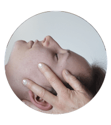

<footer>
    <div class="container-fluid" >
        <div class="row">
            <div class="col-lg-4 listing-pb">
                <a href="raison-consulter.html/#vertiges">Vertiges & étourdissements</a><br>
                <a href="raison-consulter.html/#carpien">Tunnel carpien </a><br>
                <a href="raison-consulter.html/#whiplashEtCommotionCerebrale">Whiplash & commotion cérébrale </a><br>
                <a href="raison-consulter.html/#machoire">Dos </a><br>
                <a href="raison-consulter.html/#DouleurPostopEtCicatrice">Mâchoire </a><br>
                <a href="raison-consulter.html/#syndromeDouleurIdiopathique">Douleur post-opératoire et cicatrice </a><br>
                <a href="raison-consulter.html/#cervialgie">Syndrome de douleur idiopathique </a><br>
                <a href="raison-consulter.html/#migrainesEtCephale">Cervicalgie </a><br>

            </div>

            <div class="col-lg-4 listing-pb">
                <a href="raison-consulter.html/#thorax">Épaule </a><br>
                <a href="raison-consulter.html/#fuiteUrinaire">Thorax </a><br>
                <a href="raison-consulter.html/#dos">Fuites urinaires </a><br>
                <a href="raison-consulter.html/#sciatique">Dos </a><br>
                <a href="raison-consulter.html/#douleurAbdominale">Douleur abdominale </a><br>
                <a href="raison-consulter.html/#douleurPelvienne">Douleur pelvienne</a><br>
                <a href="raison-consulter.html/#coccyx">Coccyx</a><br>
                <a href="raison-consulter.html/#migrainesEtCephale">Migraines et céphalées </a><br>

            </div>

            <div class="col-lg-4 text-center osteo-footer">
                <hr class="light">
                <h5>Ostéopathie</h5>
                <hr class="light">
                <a href="faq.html/#">FAQ </a><br>
                <a href="deroulement.html/">Déroulement d'une séance </a><br>
                <a href="craquementArticulaire.html/">Craquement articulaire </a><br>
                <a href="osteopathie.html/">Qu'est-ce que l'ostéopathie </a><br>
                <a href="raison-consulter.html/">Raisons de consultation </a><br>
            </div>

        </div>
    </div>
</footer>

<div class="container-fluid" id="Vianney">
    <div class="row text-center">

        <div class="col-md-12">
            

            <hr class="light">
            <h5>Cyril Landes Ostéopathe Diplomée en Ostéopathie (D.O.).</h5>
            <hr class="light">
            <p>Spécialisée dans les problèmes et douleurs dorsaux</p>
            <a href="contact.html"><button type="button" class="btn btn-outline-success btn-lg">Prendre RDV</button></a>
<!--            <p>Politique de vie privée</p>-->


            <!-- Copyright -->
            <div class="footer-copyright text-center py-3">© 2020 Copyright: Cyril Landes
                <br>Réalisation: <a href="https://tismaa78.github.io/PortFolio-Mathis/">Mathis Roussel</a>
            </div>
            <!-- Copyright -->

        </div>
    </div>
</div>

